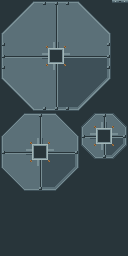

只更换端盖纹理并映射现有endcap面；B侧壳、专用MTL、几何和其他UV保持。候选128×256 atlas按每世界格16像素绘制，端盖纹理试用版已安装，真实游戏画面待用户复看。

新纹理源为本目录整数rect SVG；候选PNG由同源SVG导出。预览使用当前正式侧壳PNG、旧端盖PNG与真实OBJ几何/UV；候选端盖采样按128×256图像尺寸换算。完整受影响清单见 mapping.json。
mapping.json